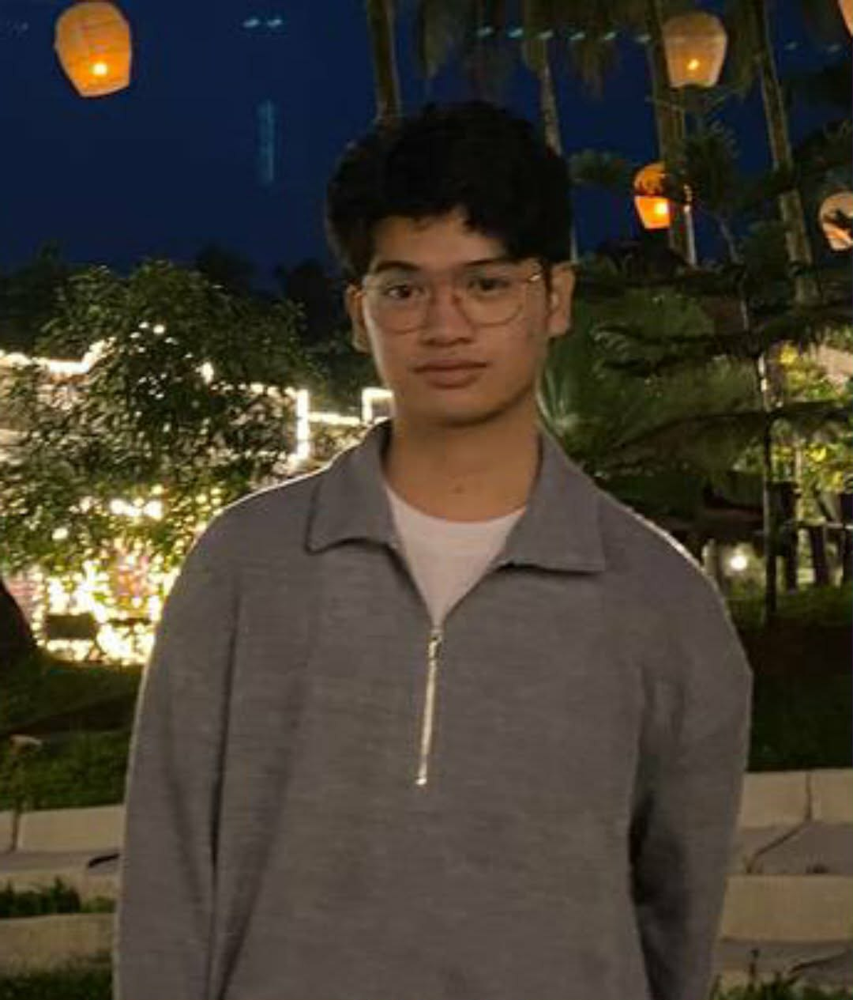
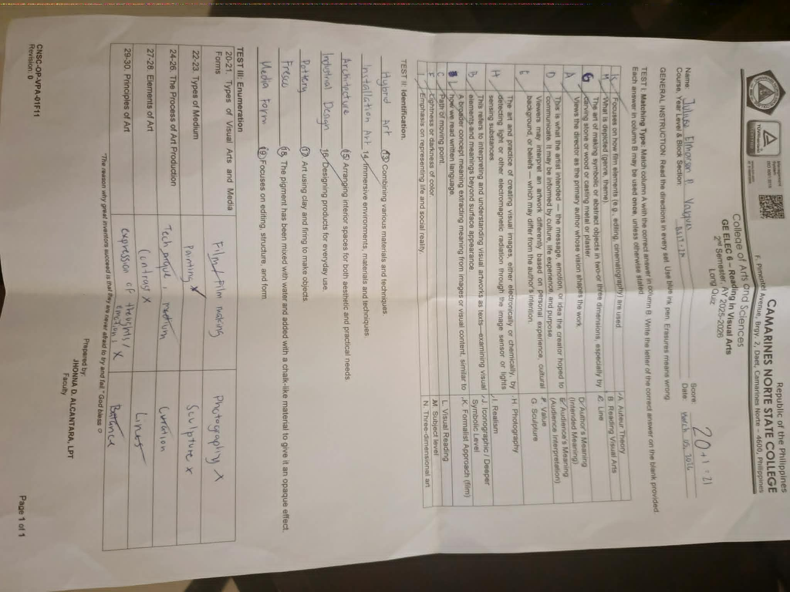

Student | Creative Learner | Future Developer
Welcome to my e-portfolio — a curated space where my academic journey, skills, and growth come together.
View PortfolioI'm Juliusz Elmarson P. Vasquez, a driven and curious student with a genuine love for technology, creativity, and continuous learning. I believe that every challenge is an opportunity to grow, and every lesson shapes the developer and thinker I am becoming.
Throughout my academic journey, I have pushed myself to excel not just in grades, but in understanding. I embrace every project, quiz, and activity as a stepping stone toward becoming a well-rounded future professional in the field of technology.
A reflection on what I gained, what challenged me, and how I grew throughout this subject.
This subject introduced me to meaningful, hands-on activities that deepened my understanding of core concepts. The interactive lessons and projects kept me engaged and made learning genuinely enjoyable. I appreciated the structured approach that allowed me to build knowledge progressively.
One of the main challenges I encountered during this subject was managing my schedule due to the large number of activities and requirements from different subjects. There were times when balancing deadlines became difficult, especially during busy academic weeks. However, in this subject itself, the lessons and activities were manageable and understandable. The experience mainly taught me how to improve my time management, stay organized, and handle academic responsibilities more effectively.
Through this subject, I learned to appreciate and better understand different forms of reading and visual arts. I developed my ability to analyze artworks, interpret meanings, and express my thoughts and reflections creatively. The discussions and activities also helped improve my observation skills, creativity, and understanding of how visual elements and literature communicate emotions, culture, and ideas. Additionally, I became more confident in sharing my perspectives and connecting lessons to real-life experiences.
Beyond academics, Reading and Visual Arts (RVA) taught me resilience and the value of persistence through interpreting texts and creating visual outputs. Every reading task, analysis, and artwork I completed helped me become more confident in expressing my ideas and understanding deeper meanings in both written and visual forms. I leave this subject with stronger critical reading skills, improved visual interpretation abilities, and a clearer vision of how to communicate ideas creatively and effectively.
A showcase of my quiz performance alongside a personal reflection on the learning experience.

TThrough this quiz and the discussions in Reading and Visual Arts (RVA), I gained a deeper understanding of how meaning is constructed both in written texts and visual forms. I learned to analyze not only what is explicitly presented but also the hidden messages, context, and purpose behind an artwork or reading material. The subject helped me recognize important concepts such as interpretation, symbolism, composition, and perspective, which are essential in understanding how visuals and texts communicate ideas. It also strengthened my awareness of how cultural and historical backgrounds influence both literature and visual art, allowing me to appreciate works more critically rather than just at surface level./p>
Some questions required deep analytical thinking under time pressure. Managing my pace while maintaining accuracy was the biggest challenge I faced during this assessment.
This experience significantly improved my analytical and comprehension skills. I became better at breaking down texts and images into their key elements and understanding how each part contributes to the overall message. My ability to observe details, compare interpretations, and explain ideas clearly also developed further. In addition, I gained better familiarity with RVA concepts, which helped me apply them more confidently during quizzes and assessments. Overall, I now have a stronger grasp of the subject, especially in interpreting visual and written materials with more accuracy and depth.
This quiz became an important turning point in my learning experience because it resulted in a perfect score on the summative test, which led to my exemption from the midterm exam. More than the result itself, I realized that consistent effort and understanding of the lessons truly pay off. It showed me that when I take time to genuinely learn and apply concepts instead of memorizing them, I perform better academically. This experience also boosted my confidence and motivated me to maintain the same level of discipline and focus in future lessons.
A sincere message of gratitude and constructive reflection for my professor.
I am deeply grateful for your dedication and passion in teaching this subject. Your clear explanations, patience, and genuine care for your students made a significant difference in my learning journey. You created an environment where asking questions felt safe, and that encouraged me to engage more deeply with the material.
Your consideration as an instructor truly made our college life much easier. You were always understanding when it came to our workload, deadlines, and overall academic pressure, which helped us feel more at ease throughout the course. Instead of adding stress, you guided us in a very supportive and patient way, making the lessons more manageable and easier to understand. Because of this, we were able to focus better on learning and improving ourselves with confidence.
Honestly, I don’t think there is anything you need to improve because you already do your job exceptionally well. Your teaching style, patience, and genuine care for your students create a positive and comfortable learning environment. You are already an outstanding instructor, and we truly appreciate everything you have done for us.
With sincere gratitude,
Juliusz Elmarson P. Vasquez